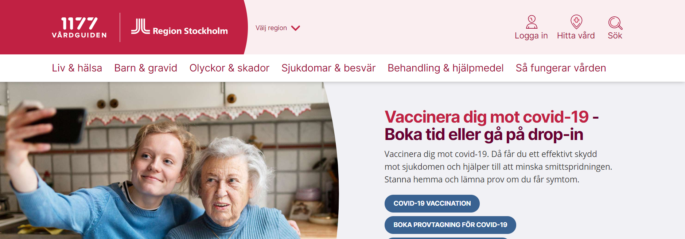
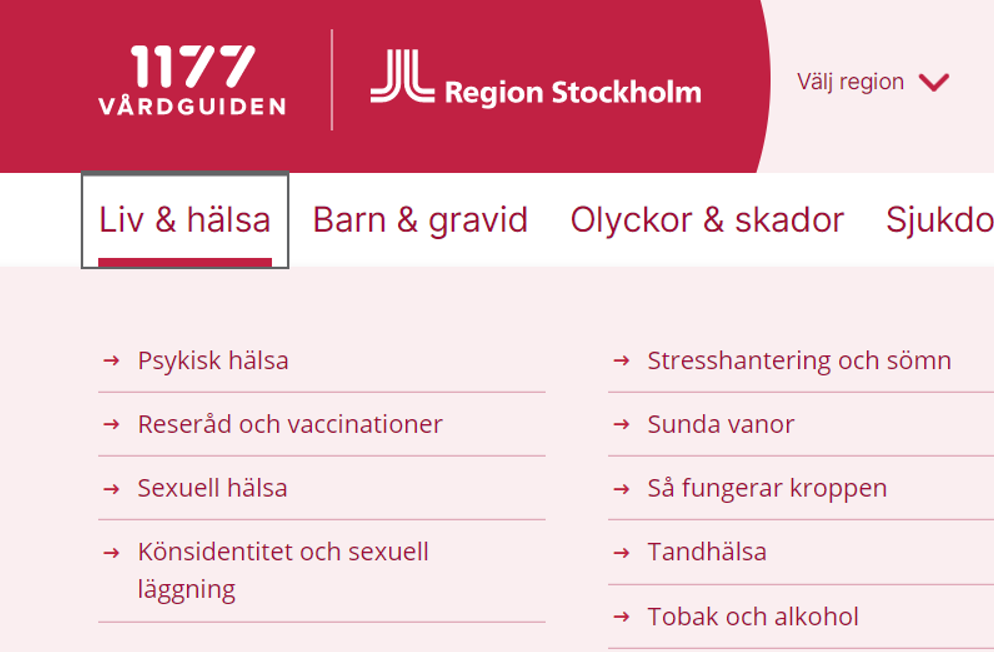

Global Navigation
Navigation på webplasten är en system som hjälper man vart hen är kan komma hit och ditt genom trycka på knappen på webplasten. Global navigation är ena typ av navigation som är tillgänglig hela tiden och ligger uppe på webplasten. Länkar på navigation är ska gå till direkt den sidan som man will på webplasten och detta kan inte gå till någat orelavant sidan. Glabal navigation spelar en viktig och stort roll för att söka information, utforskning och till och med återfinning och söka kända föremål.
Lokal Navigation
Lokal navigation är en navigation som ta när global navigtion lämnar dig, till exempel i den här bild i länk ”liv&hälsa” det finns lokal navigation av liv& hälsa. Den är ganska lätt om man vill ha information om hälsa man bara gå runt om kring av den knappen och hittar information.
Courtasy Navigation
Courtesy navigation är en navigation vilken är extra information och den ligger längst ner på sidan eller upp på vänster och kallas sekundär navigation till exempel “Regestera dig, “kontaka oss", “feedback” och mm. Dessa länkar man behövs inte vanligtvis men de är anu viktiga när man tänkar om kontakt, policy och mm. Den navigation ibland kallas “banner meny” för att det oftast vara integrerade med banner sidan på webplaste.I den här exapmlen courtasy navigation visar uppe i höger hornet. Den är viktig men om man har sticky / fixed navigation och scroll upp sidan courtasy navigation kan försvinna.
Supplementary Navigation
Supplementary navigation är ett sätt av gernvägen till releterad kontent vilken är inte existerat i lokal och global navigation. Man kan säga den är endast navigation som erbjuder val. Det finns några olika typer av supplementary navigation tables of content, indixes(alphabetical, kronological) och Site Map(information om hierarchy), confugrater(språk och land selectors).
Det är stor skillnad melan alla olika navigation. Det beror på hur man skapar layout till websidan. Man kan använda alla navigation på en websidan om man vill, stora webplaster mes 1000 sidor har sådana navigation för att bli lättare att nå. de ser ut likadan men har olika funktioner. Jag har kollat på bådda sidorna som har alla fyra typer av navigation till exempel Global, Lokal, Courtesy och Supplementary navigation.
1177 Vårdguiden The Newyork Time